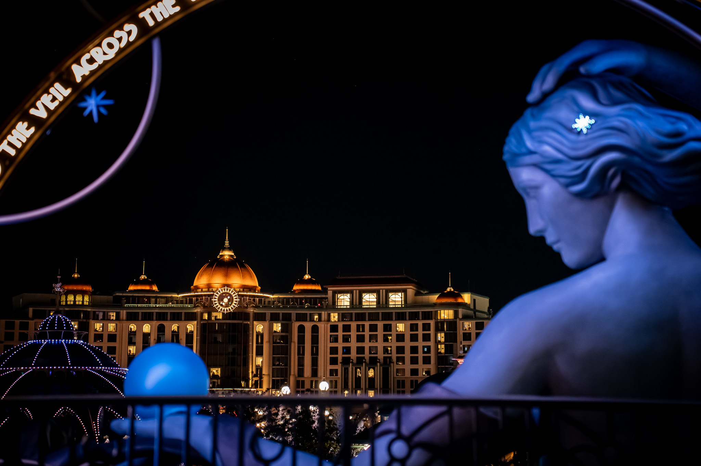
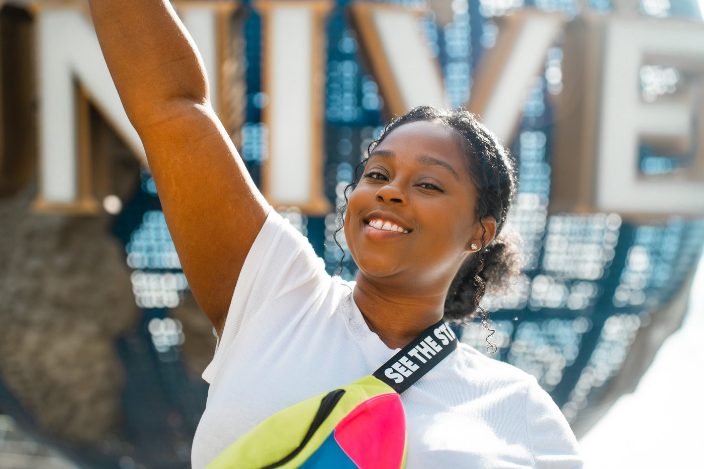
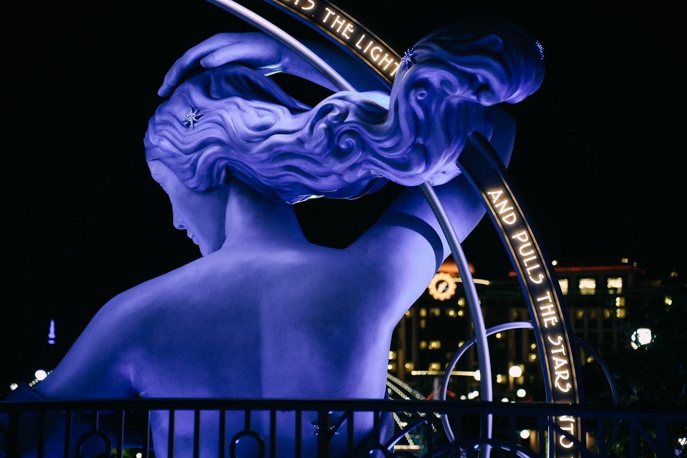
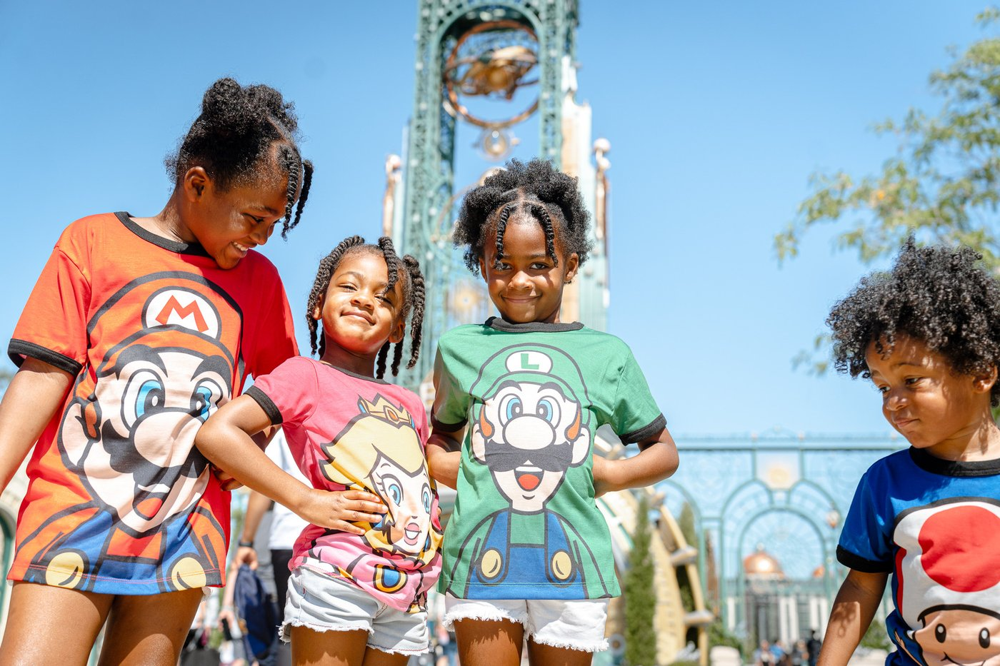
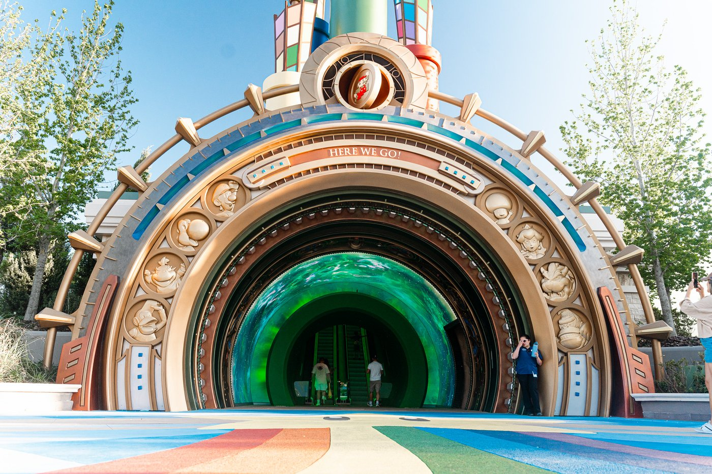
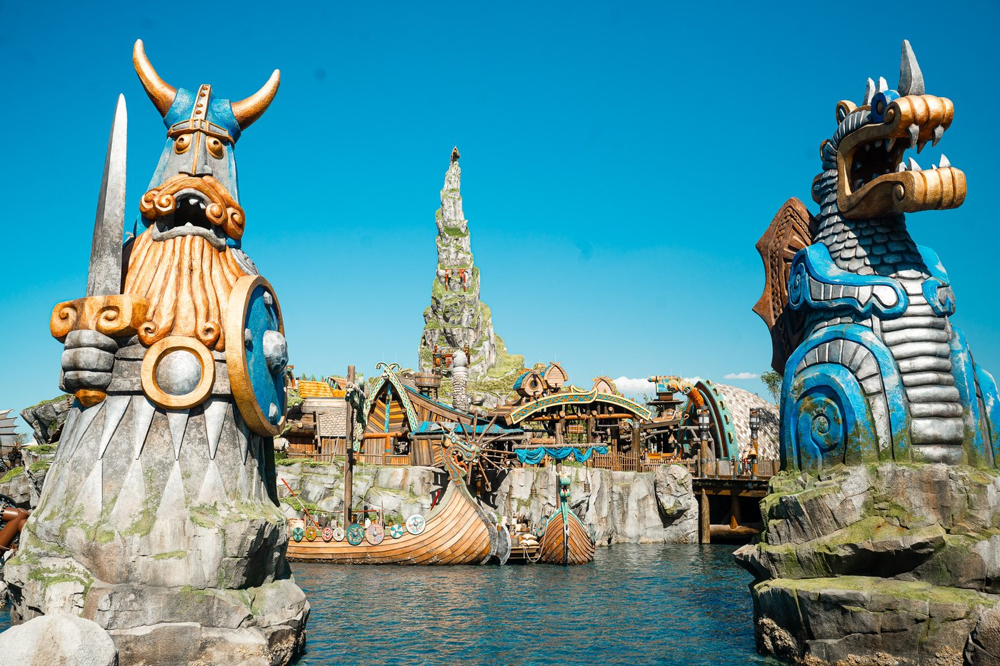
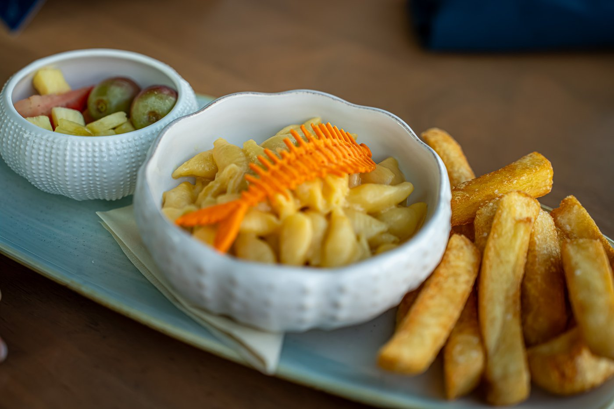
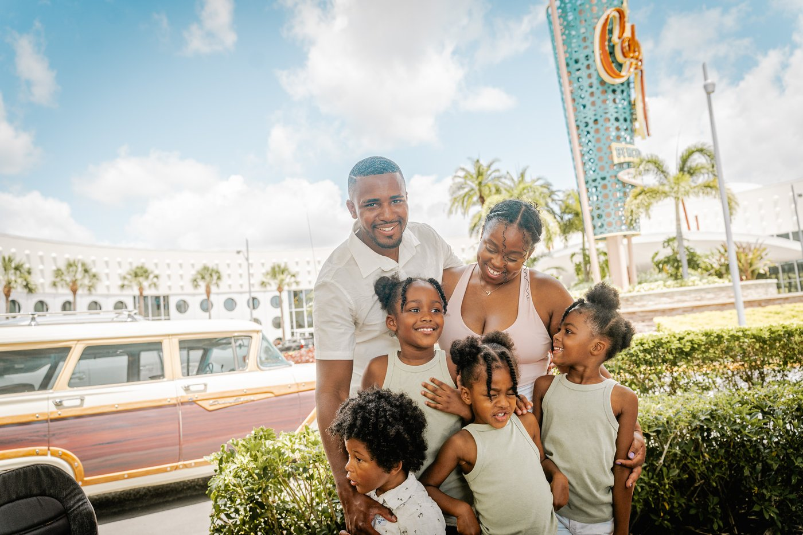
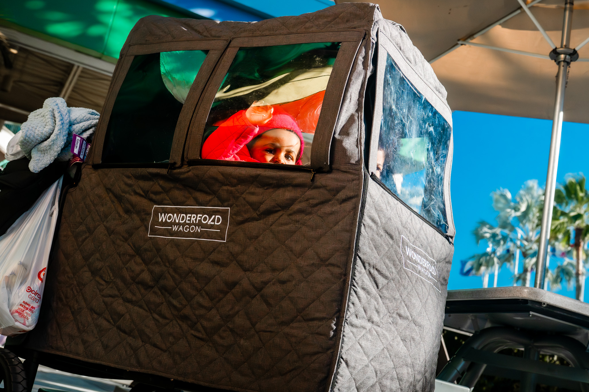

I have been going to Universal Orlando since I was two years old. Jordan and I both grew up making that drive to Florida at least once or twice a year with our parents. We have been coming here so long we genuinely stopped counting. Now we bring our own six kids. That full circle feeling never gets old. This is the guide we wish we had back then.

When people ask us for Universal tips, we always have to give them a little context first. We are not tourists. We are locals who live minutes from the parks and have been visiting our whole lives. Our kids grew up going to these parks the same way we did. It is just part of how this family lives.
That said, we know exactly how it feels to show up for the first time with a carload of kids and zero idea where to start. We have watched it happen to families over and over again. So everything in this guide comes from real experience, not a press trip or a list we found online.
If we are being real, Islands of Adventure is the move for families with kids. It is the most complete, most family friendly of the two original parks. More lands, more variety, more things that every age group can actually do together. Universal Studios Florida is great and we love it, but Islands of Adventure simply has more going for it if your crew has little ones.
That said, nowadays we find ourselves at both parks pretty evenly because half the time we go just for the vibes. Walking around, getting a snack, soaking up the atmosphere. Universal has that effect on you when you have been going your whole life. It stops being a destination and starts being your place.
And then there is Epic Universe, which has genuinely changed the whole conversation. More on that below.
Our family has been to Epic Universe twice together. We had been covering it on our channel for over a year before it ever opened, so when we finally walked in as a family the kids already knew what was coming. They showed up in their Mario outfits. They were ready.
But nothing fully prepared us for what it actually felt like to walk through that portal for the first time.

The moment you walk through that portal, you hear the heartbeat. You see the Grand Helios rising in the background. You see the Luna statue. And you are just overwhelmed with the day you are about to have. It was exciting and overwhelming at the exact same time. We did not know if we wanted to stand there and take it all in, go get food, go buy merch, or just sprint toward Harry Potter. That feeling of not knowing what to do first because everything looks incredible is something you really cannot explain until you experience it yourself.


The first time we walked into Super Nintendo World with our daughter Aria, the goosebumps hit immediately. She was deep in her Mario era at the time. She loved the movie and was all in on that world. Seeing her face the moment she stepped through those doors is something I will never forget. That is the reason you take the trips. That is the reason you spend the money. To see that reaction from your child.
But the ride that actually had our whole family in tears? Hiccup's Winged Gliders in How to Train Your Dragon. Do not let anyone tell you it is just a roller coaster. That ride tells the story so powerfully, the way you are racing and training the dragon yourself, that we all came off crying. Every single one of us. We were not expecting that.
For Epic Universe, you need to be a resort guest to access Early Park Admission. This is different from the other parks where annual pass holders can also get in early. If Epic Universe is on your itinerary, book a Universal hotel. We have stayed at Cabana Bay and Endless Summer (vlog dropping soon) and the early entry benefit alone is worth every penny at this park.
These are the ones we do on basically every single visit. No exceptions.
This one is sacred to us. Jordan and I both rode ET as children. Now our kids ride it. That full circle moment hits every single time. The ride itself is a classic and honestly a little wonky in the best way, but the meaning behind it for our family makes it untouchable. If you are bringing your kids to Universal Studios Florida, you ride ET. End of discussion.
The kids are obsessed with this one and so are we. The competitive scoring system means everyone is trying to outshoot each other the whole ride and the trash talk starts about three seconds in. It is genuinely one of the most fun family rides at any theme park. Also, it has the best air conditioning of any attraction in the entire resort. We said what we said.
Another one we grew up on that we now bring our kids on. It is pure Seuss magic and another full circle ride for our family. For the record, it has the second best AC in the parks. We rank these things seriously.
This is huge for us specifically because most of our kids can ride it. With six children ranging from ages zero to nine, finding rides that four out of six can do together is a win. Spider-Man is a must every time we are at Islands of Adventure.
Over on the Universal Studios side, this one is always on our list. Great technology, great pacing, and the kids never get tired of it.

We have not spent enough trips at Epic Universe yet to have a full must-do list, but we can tell you that How to Train Your Dragon as a land is where we have spent the most time. Berk is breathtaking. The land itself is an experience before you even get on a single ride. And as mentioned, that coaster will have you emotional in ways you are not prepared for.
Fast and Furious Supercharged and Race Through New York Starring Jimmy Fallon are the two weakest entries in the whole resort in our opinion. They are fine, but if you are short on time, these are the ones to cut first.
We have eaten our way through nearly every restaurant at the resort over the years. Here is what we actually recommend.

This is our go-to for a real family meal at Islands of Adventure. They recently reimagined the menu and the food is genuinely good. Not typical theme park food. Good variety, nothing too picky, and it can handle a table of eight without any drama. Highly recommend.
We have been singing the praises of Minion Cafe for a long time. The food is consistently fresh, the theming is fun for the kids, and the menu is creative without being weird. Their minion tots are legendary. If you are at Universal Studios Florida and need a solid family meal, go here.
This one is not a restaurant, it is a snack cart tucked inside the London area of the Wizarding World, and it is an absolute institution for our family. The jacket potato from that cart is so good that we now make loaded baked potatoes at home all the time because of it. If you walk past it without stopping, you are making a mistake.
As locals, we do not always eat full meals inside the parks. We will often grab a big breakfast before we go, snack inside, and save a sit-down meal for one meaningful stop. When you are feeding eight people, being strategic about where you spend on food makes a real difference.

The biggest mistake we see families make is not arriving early and not breaking their day up. Here is our exact approach and it works every time.
Get there as early as you possibly can. Resort guests and pass holders can be there for Early Park Admission, so use it. Kids have the most energy in the morning and the lines are shortest right when the park opens. Push hard through the morning, hit your priority rides, and get a solid lunch in.
Then leave. Go back to your hotel. Nap if you can, even just an hour or two. Then come back in the evening. Parks typically stay open until 9 or 10pm, the weather has cooled down significantly, and the night atmosphere at Universal is a completely different and honestly more magical experience. Most families either arrive too late or grind through the hottest part of the day without a break and that is when kids completely lose it. Build the break in intentionally and your whole day changes.
We have been to Universal so many times that individual trips tend to blur together. But one stands out. In late 2025, there was a massive cold snap in Orlando. It got so cold that ice actually formed underneath the globe at Universal Studios Florida. We went that day and the park was nearly empty. It genuinely felt like we had the whole place to ourselves. We did everything, moved freely, and spent the day just reflecting on how much we love this place. Sometimes the best park days are the ones you least expect.

Traveling with six kids requires a different playbook. Here is what we have figured out.
The one exception to all ride advice is Hagrid's Magical Creatures Motorbike Adventure. That line is its own category. Plan for it, budget the time, and know going in that it will take a while. It is absolutely worth it but it will eat a chunk of your day. Just factor that in.
Universal Orlando is not just a theme park to us. It is a place that has been part of our family story for multiple generations now. We rode ET as kids. Our kids ride it now. We walked into Epic Universe before it opened and felt genuinely emotional about what it is going to mean for the next generation of families.
Whatever size your family is, whatever ages your kids are, Universal Orlando has something for you. Plan around your youngest. Get there early. Break the day up. Get the jacket potato. And if you have not been to Epic Universe yet, make that the center of your whole trip. We promise you are not ready for it.
All the rides, all the food, all the real family moments. Subscribe and come along for every trip.
Subscribe on YouTube →